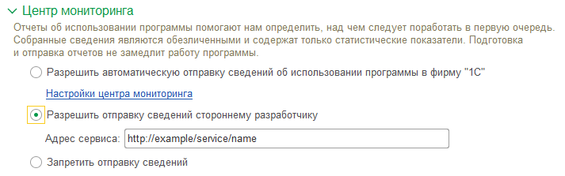

Мы планируем доработать блок сбора статистики и обнаружили, что у Вас включена отправка статистики по работе программы на веб-сервис с адресом %Адрес%.

(см. настройки в Центре мониторинга)
Уточните, пожалуйста, с какой целью было принято решение отправлять статистику, и актуальны ли ваши потребности на данный момент? Используется ли Вами как-то статистика, отправляемая на указанный адрес?
Мы бы хотели узнать Ваше мнение, чтобы учесть его при доработке.